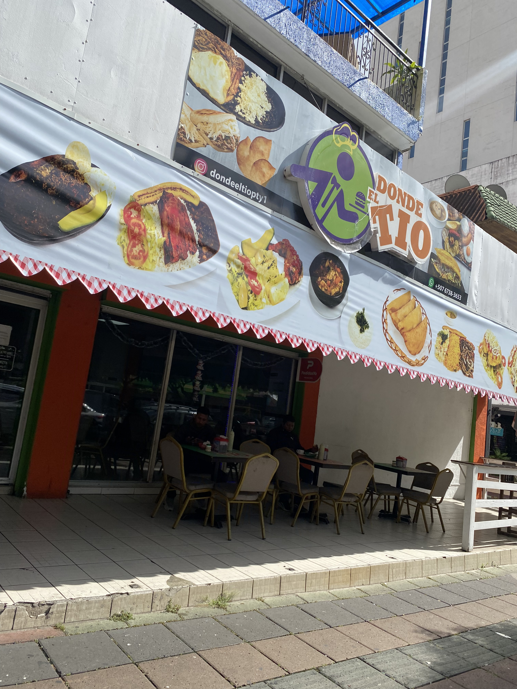

Galería de Imágenes
Restaurante
Minisuper
Spot para fotos

Zona recreativa de skate
Metro de via Argentina

Fuente
Centro de Artes Escénicas
Residencias
Residencias

Roberto Durán🥊
Caja de ahorros
Estatua de Albert Einstein

Fonda
Parque
Restaurante el Trapiche

Farmacia
Hotel

Mural
Galería de Videos
Zona del metro
Entrevista 1
Entrevista 2
Entrevista 3
Entrevista 4
Caminata por la comunidad